Apa itu INLISLite?
Kenali INLISLite, satu aplikasi dengan berbagai kemudahan dalam genggaman Anda. Mulai dari pencarian koleksi, peminjaman, keanggotaan, hingga akses literatur digital.
Dirancang untuk membantu seluruh perpustakaan di Indonesia demi memenuhi keperluan pemustaka di berbagai daerah. Temukan inspirasi, referensi, dan wawasan baru dalam satu aplikasi ini.
Tentang Pengembangan
Pengembang
Aplikasi ini dirancang langsung oleh Divisi Pusat Data dan Informasi, Perpustakaan Nasional Republik Indonesia, untuk memberikan pengalaman terbaik dalam mengelola perpustakaan berbasis digital demi mewujudkan modernisasi di lingkup perpustakaan.
Teknologi
Aplikasi ini dibangun di atas framework CodeIgniter 4, sebuah framework PHP full-stack yang ringan, cepat, fleksibel, dan aman.
Persyaratan Perangkat
INLISLite berbasis web. Aplikasi dipasang di satu komputer server, lalu diakses oleh PC atau laptop petugas dan pemustaka melalui browser.
1. PC / Laptop Pengguna (Klien)
Perangkat yang dipakai petugas perpustakaan dan pemustaka untuk membuka aplikasi.
| Komponen | Minimal | Disarankan |
|---|---|---|
| Prosesor | Dual Core 2 GHz | Intel Core i3 / AMD Ryzen 3 atau lebih tinggi |
| RAM | 4 GB | 8 GB |
| Penyimpanan | Ruang kosong 1 GB | SSD |
| Layar | Resolusi 1366 × 768 | Resolusi 1920 × 1080 |
| Sistem Operasi | Windows 10, Linux desktop, atau macOS | Windows 11 / Ubuntu Desktop 22.04 terbaru |
| Browser | Chrome, Firefox, atau Edge versi terbaru | Google Chrome versi terbaru |
| Jaringan | Terhubung ke jaringan server (LAN/Wi-Fi) | LAN 100 Mbps |
| Perangkat Tambahan | — | Barcode scanner, printer (kartu anggota, label, struk) |
2. Server Windows Windows
Cocok untuk perpustakaan kecil-menengah atau instalasi lokal menggunakan Laragon / XAMPP.
| Komponen | Minimal | Disarankan |
|---|---|---|
| Prosesor | Intel Core i3 / AMD Ryzen 3, 2 core | Intel Core i5 / AMD Ryzen 5, 4 core atau lebih |
| RAM | 4 GB | 8 GB atau lebih |
| Penyimpanan | HDD 100 GB | SSD 250 GB atau lebih |
| Sistem Operasi | Windows 10 64-bit | Windows 11 64-bit / Windows Server 2019 atau lebih baru |
| Web Server Stack | Laragon atau XAMPP (Apache) | Laragon versi terbaru |
| Jaringan | LAN dengan IP tetap (statis) | LAN 1 Gbps + koneksi internet |
3. Server Linux Linux
Cocok untuk instalasi produksi yang stabil dan diakses oleh banyak pengguna.
| Komponen | Minimal | Disarankan |
|---|---|---|
| Prosesor | 2 vCPU / 2 core | 4 vCPU / 4 core atau lebih |
| RAM | 2 GB | 4–8 GB |
| Penyimpanan | 50 GB | SSD 100 GB atau lebih |
| Sistem Operasi | Ubuntu Server 20.04 / Debian 11 / Rocky Linux 8 | Ubuntu Server 24.04 LTS / Debian 12 |
| Web Server | Apache 2.4 (dengan mod_rewrite) atau Nginx | Nginx + PHP-FPM |
| Jaringan | IP tetap (statis) | IP publik + domain + sertifikat SSL (HTTPS) |
4. Perangkat Lunak Server (Windows & Linux)
Kebutuhan perangkat lunak berikut berlaku untuk kedua jenis server.
| Perangkat Lunak | Minimal | Disarankan |
|---|---|---|
| PHP | 8.2 | 8.3 / 8.4 |
| Database | MySQL 5.7 / MariaDB 10.3 | MySQL 8.0 / MariaDB 10.11 |
| Composer | 2.x | Versi terbaru |
| Ekstensi PHP | intl, mbstring, mysqli, json, curl, gd, zip, xml, fileinfo, openssl | |
| Opsional | Redis (cache dan sesi) untuk performa lebih baik | |
Instalasi Localhost di Windows
Paket instalasi INLISLite untuk Windows sudah berisi Laragon (Nginx, PHP, MySQL), source code aplikasi, dan database. Anda tidak perlu memasang web server secara terpisah.
-
Download paket instalasi
- Buka https://inlislite.perpusnas.go.id/link-download.
- Pilih Paket Instalasi INLISLite versi 3.3 (sistem operasi Windows).
- Klik tombol Unduh, lalu tunggu hingga file ZIP selesai diunduh.
- File tersimpan di folder Downloads.
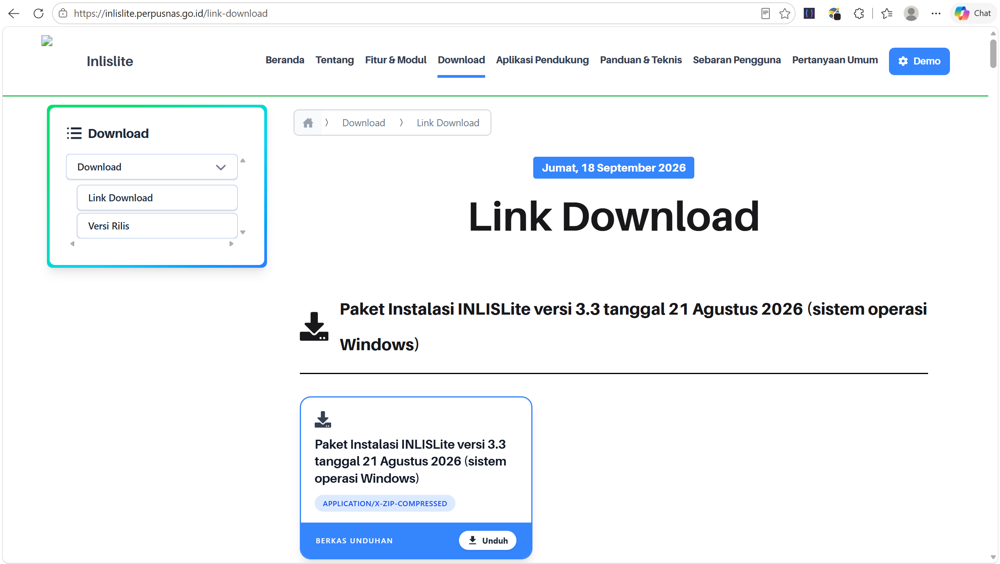
Halaman Link Download di website INLISLite. -
Ekstrak file ZIP
- Buka folder Downloads di File Explorer.
- Klik kanan file ZIP INLISLite, lalu pilih Extract All....
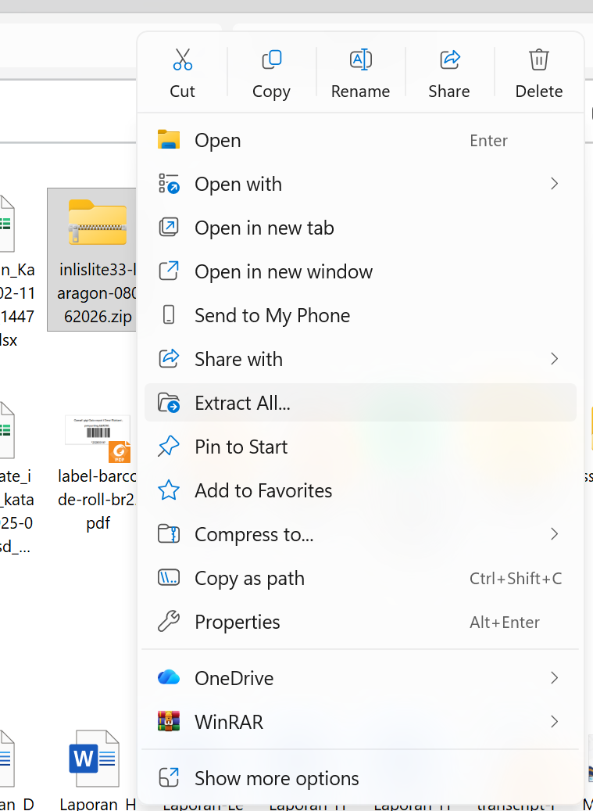
Klik kanan file ZIP, pilih Extract All... -
Pilih lokasi ekstrak
C:\- Ubah lokasi tujuan menjadi
C:\(root drive C). - Klik Extract, lalu tunggu hingga selesai.
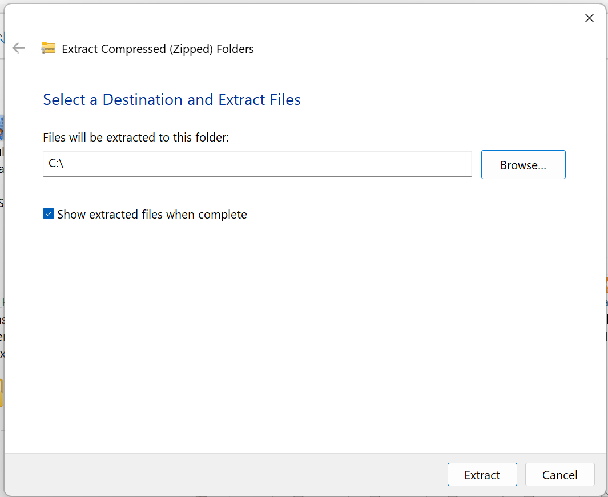
Isi tujuan ekstrak dengan C:\ - Ubah lokasi tujuan menjadi
-
Periksa folder
C:\laragon- Buka File Explorer, lalu masuk ke drive
C:\. - Pastikan folder
laragonsudah ada.
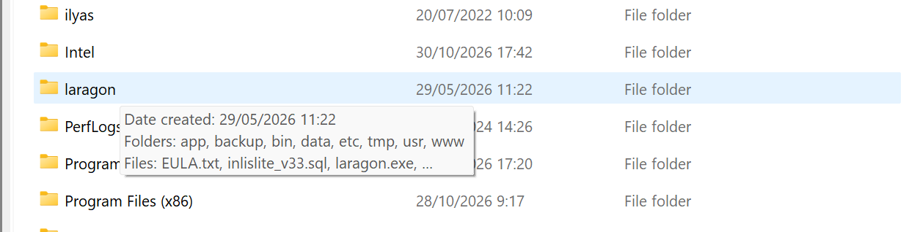
Folder laragon hasil ekstrak di drive C. - Buka File Explorer, lalu masuk ke drive
-
Jalankan
laragon.exe- Buka folder
C:\laragon. - Double-klik file
laragon.exe. - Jika muncul pop-up lisensi, klik tombol X di pojok kanan atas untuk menutupnya.
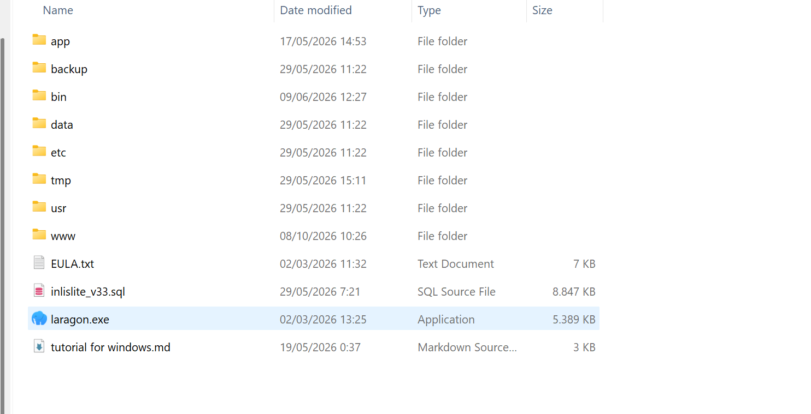
Isi folder C:\laragon. Jalankan laragon.exe. - Buka folder
-
Klik Start All
- Pada panel Laragon, klik tombol Start All.
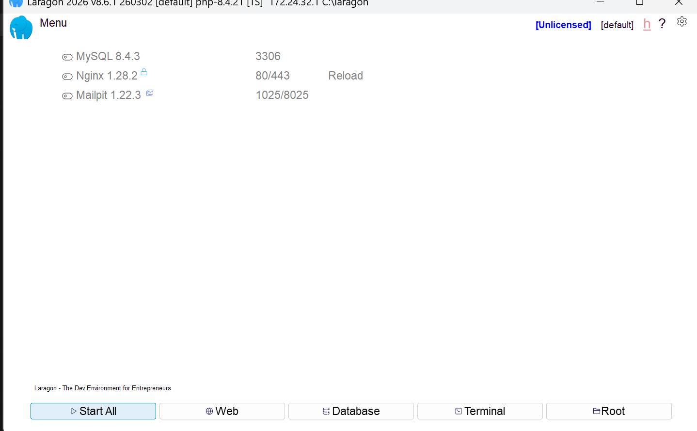
Panel Laragon. Klik Start All. -
Pastikan layanan aktif
- Tunggu beberapa detik hingga indikator MySQL dan Nginx berubah menjadi hijau.
- Tombol Start All berubah menjadi Stop.
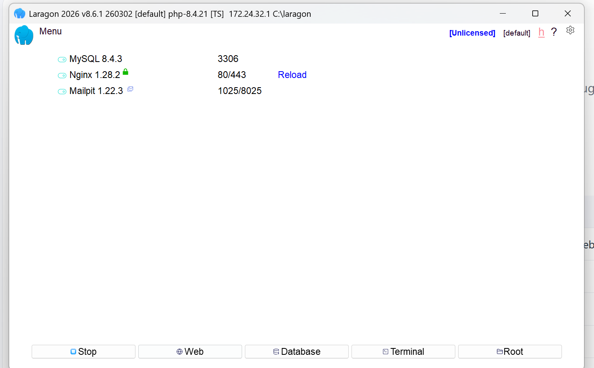
MySQL dan Nginx sudah berjalan. -
Buka aplikasi di browser
- Klik tombol Web di panel Laragon.
- Atau buka browser, lalu ketik
http://localhostdan tekan Enter. - Halaman beranda INLISLite v3.3 akan tampil.
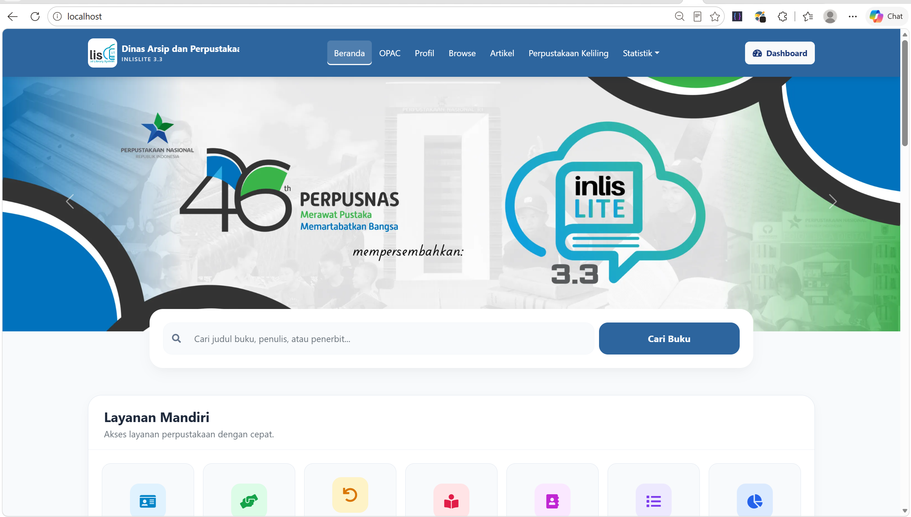
Beranda INLISLite v3.3 di http://localhost. -
Login ke Dashboard
- Klik tombol Dashboard di pojok kanan atas.
- Lanjutkan ke bagian Login.
Troubleshooting
- MySQL / Nginx tidak berubah hijau setelah Start All
-
- Pastikan port
80(Nginx) dan3306(MySQL) tidak dipakai aplikasi lain, misalnya XAMPP atau IIS. - Klik Stop, tunggu beberapa detik, lalu klik Start All lagi.
- Pastikan port
- Browser tidak terbuka saat klik Web
- Buka browser secara manual, lalu ketik
http://localhost. - Halaman error atau tidak tampil
-
- Pastikan MySQL dan Nginx di Laragon sudah hijau sebelum membuka browser.
- Refresh browser dengan menekan F5.
- Muncul
502 Bad Gateway(nginx) -
Error ini muncul karena PHP gagal berjalan. Penyebab umumnya: komputer belum memiliki Microsoft Visual C++ Redistributable.
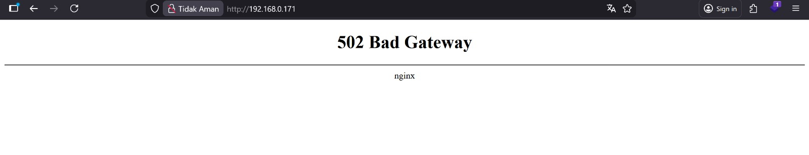
Tampilan error 502 Bad Gateway. Lakukan langkah berikut secara berurutan:
- Download dan install Visual C++ Redistributable (x64) dari https://aka.ms/vs/17/release/vc_redist.x64.exe.
- Di panel Laragon, klik Stop, lalu tutup Laragon.
- Restart PC / laptop.
- Setelah komputer menyala, buka lagi
C:\laragon\laragon.exe. - Klik Start All seperti biasa, lalu buka
http://localhost.
Login
Halaman login dibuka melalui tombol Dashboard di beranda, atau langsung di
http://localhost/login.
-
Buka halaman login
- Halaman Masuk ke INLISLite akan tampil.
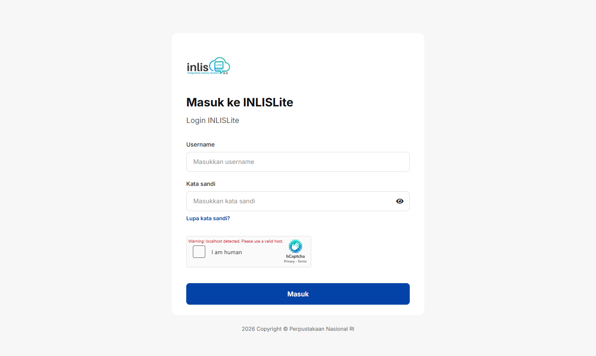
Halaman login INLISLite. -
Isi username dan kata sandi
- Gunakan akun bawaan berikut.
Username adminKata sandi P@ssw0rd- Centang kotak I am human (hCaptcha), lalu selesaikan verifikasi jika diminta.
- Klik tombol Masuk. Tombol baru aktif setelah verifikasi berhasil.
Form login yang sudah diisi. -
Masuk ke Dashboard
- Setelah berhasil login, halaman Dashboard tampil berisi ringkasan koleksi, layanan, dan kunjungan.
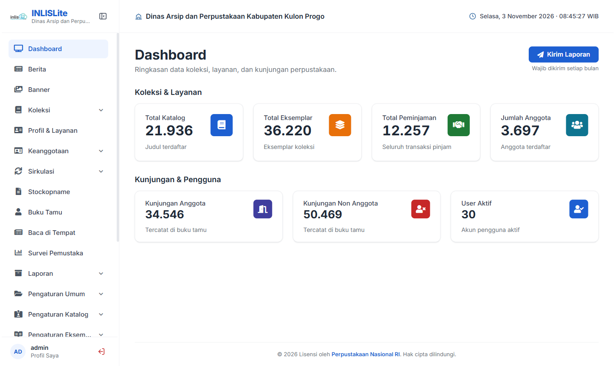
Dashboard INLISLite setelah login.
admin setelah login pertama,
terutama jika aplikasi diakses dari komputer lain di jaringan.
Pengaturan Nama Perpustakaan
Setelah login pertama, lengkapi identitas perpustakaan Anda. Data ini tampil di beranda, header aplikasi, dan kop laporan.
-
Buka menu Pengaturan Umum
- Pada sidebar kiri, klik Pengaturan Umum.
- Klik submenu Nama Perpustakaan.
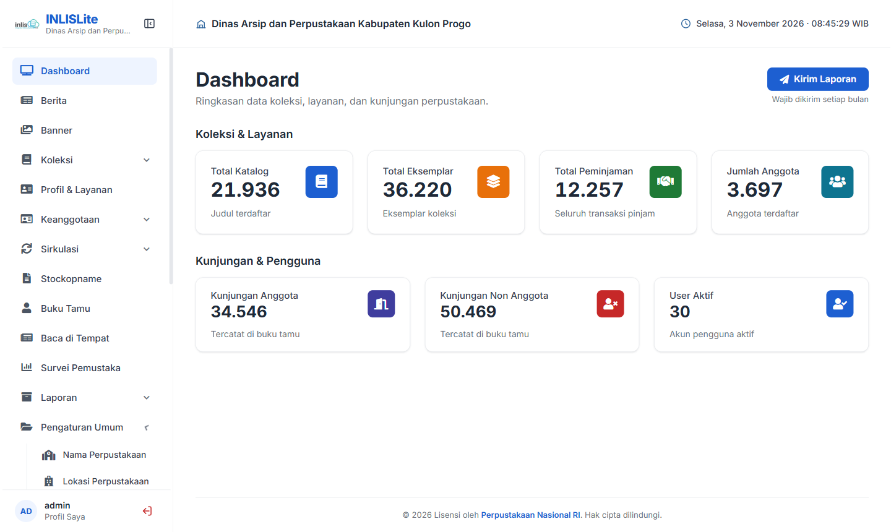
Menu Pengaturan Umum > Nama Perpustakaan di sidebar. -
Cari data perpustakaan (opsional)
- Pada kotak Pencarian Data Perpustakaan, ketik NPP atau nama perpustakaan (minimal 3 karakter).
- Klik Cari, lalu pilih perpustakaan Anda. Form akan terisi otomatis.
- Jika data tidak ditemukan, isi form secara manual.
-
Lengkapi form Pengaturan Nama Perpustakaan
Isian Keterangan NPP Nomor Pokok Perpustakaan. Nama Lembaga Nama resmi perpustakaan atau lembaga. Alamat Alamat lengkap perpustakaan. Provinsi s.d. Kelurahan Pilih wilayah secara berurutan: Provinsi, Kabupaten/Kota, Kecamatan, Kelurahan/Desa. Jenis Perpustakaan Contoh: UMUM, SEKOLAH, PERGURUAN TINGGI, KHUSUS. Email & No. Telepon Kontak resmi perpustakaan. Instagram, Youtube, Facebook Akun media sosial perpustakaan. Jam Operasional Jadwal layanan, tampil di beranda. Tulisan Banner Teks sambutan di beranda. Tentang Kami Profil singkat perpustakaan. Gunakan Kop di Laporan Pilih Ya agar kop perpustakaan tercetak di laporan. 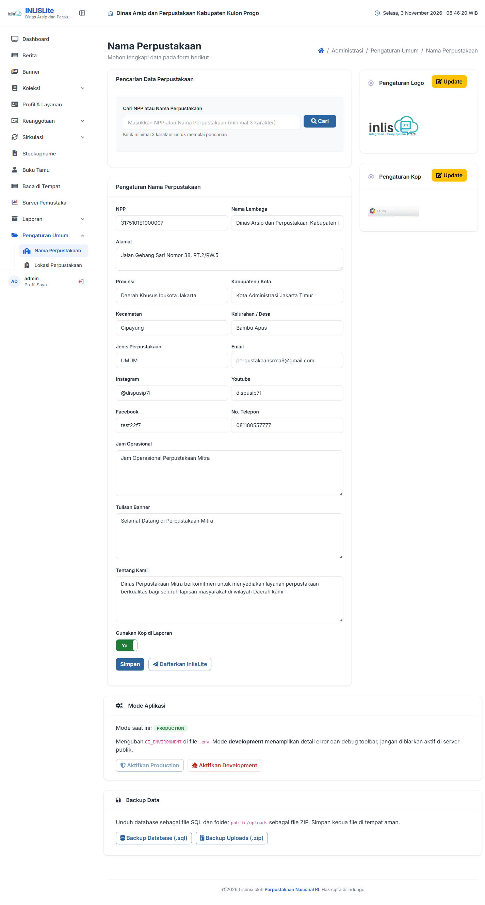
Halaman Pengaturan Umum > Nama Perpustakaan. -
Atur logo dan kop
- Pada panel Pengaturan Logo, klik Update untuk mengunggah logo perpustakaan.
- Pada panel Pengaturan Kop, klik Update untuk mengunggah gambar kop laporan.
-
Simpan
- Klik tombol Simpan.
- Nama perpustakaan baru tampil di header aplikasi dan beranda.
- Klik Daftarkan InlisLite untuk mengirim data perpustakaan ke Perpustakaan Nasional agar tercatat sebagai pengguna INLISLite. Fitur ini membutuhkan koneksi internet.